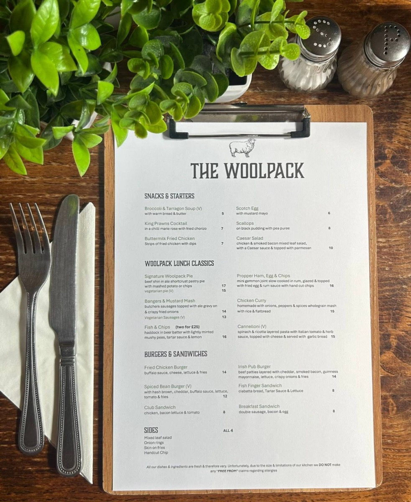

Freshly prepared food at lunchtime and in the evening, a roast every Sunday and real ales on the bar. Here's what to expect when you visit.
Freshly prepared pub food, from starters and sandwiches to our signature beef shin and ale pie.
Dishes and ingredients are fresh, so the menu can vary. Reservations are available for dining in.

with warm bread & butter
in a chilli Marie Rose with fried chorizo
strips of fried chicken with dips
with mustard mayo
on black pudding with pea purée
chicken & smoked bacon mixed leaf salad with a Caesar sauce, topped with parmesan
beef shin in ale shortcrust pastry pie, with mashed potato or chips
with mashed potato or chips
butcher's sausages topped with ale gravy on wholegrain mash & crispy fried onions
with ale gravy & crispy fried onions
haddock in beer batter with lightly minted mushy peas, tartare sauce & lemon. Two for £25
mini gammon joint slow cooked in rum, glazed & topped with fried egg & rum sauce, with hand-cut chips
homemade with onions, peppers & spices, with rice & flatbread
spinach & ricotta layered pasta with Italian tomato & herb sauce, topped with cheese & served with garlic bread
buffalo sauce, cheese, lettuce & fries
beef patties layered with cheddar, smoked bacon, Guinness mayonnaise, lettuce, crispy onions & fries
with hash brown, cheddar, buffalo sauce, lettuce, tomato & fries
ciabatta bread, tartare sauce & lettuce
chicken, bacon, lettuce & tomato
double sausage, bacon & egg
All our dishes & ingredients are fresh & therefore vary. Due to the size & limitations of our kitchen we do not make any “free from” claims regarding allergies. Please speak to us before ordering. V = vegetarian.
Our Sunday roasts are what people come back for: a proper plate with all the trimmings, served from midday.
Sundays get busy, so we'd recommend booking your table ahead.
One of our most popular nights: a hearty pie, like our signature beef shin and ale pie, with a pint from the bar.
Dates can change, so give us a ring or check our Facebook page for the next one.
Three real ales on the bar, well kept and ready to pour.
Ask at the bar for what's on today.
Our heated garden means you can eat and drink outside for more of the year.
We're dog friendly too, so bring them along after a walk on the Westwood.
Sunday roasts and Pie & Ale Night get busy, so ring ahead or drop us an email and we'll save you a seat.